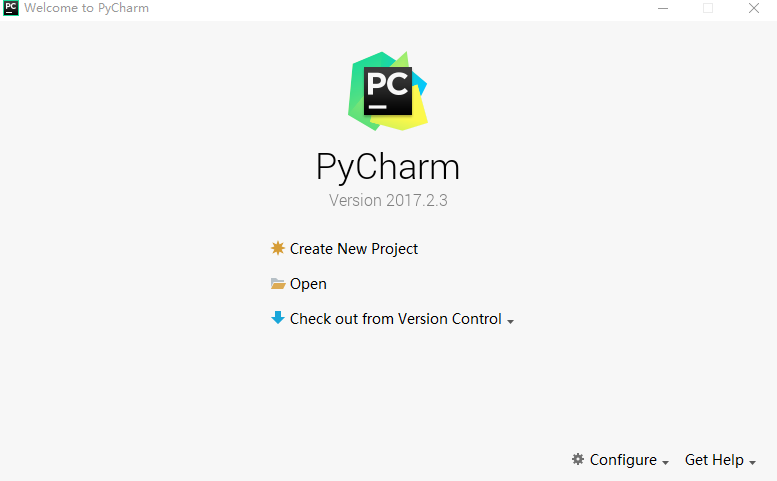
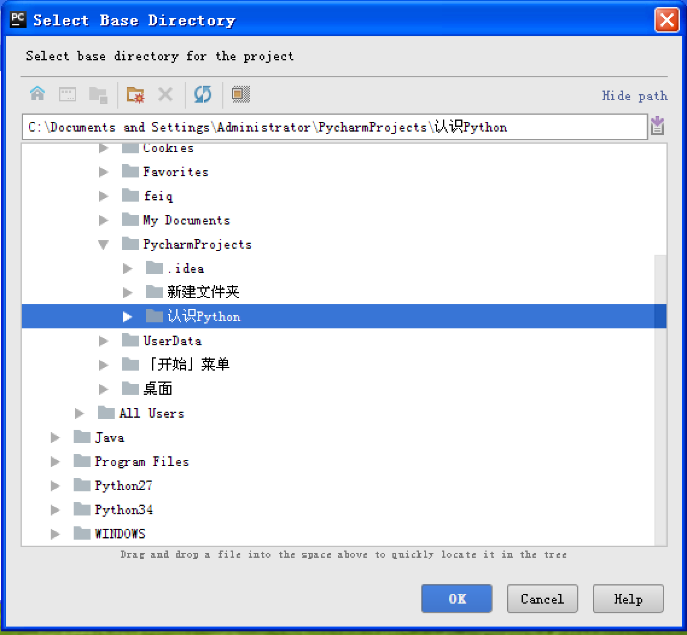
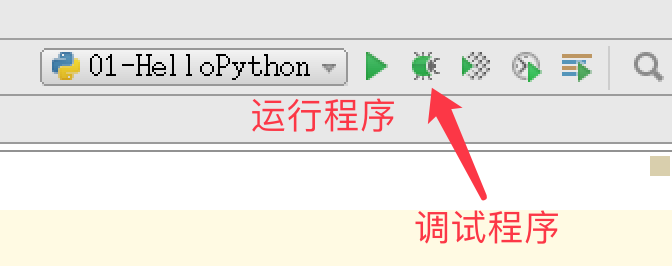
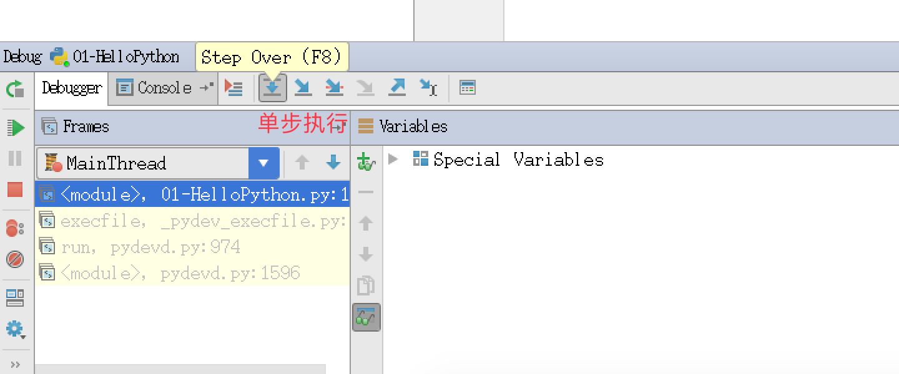
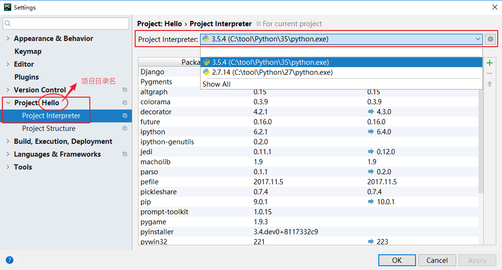
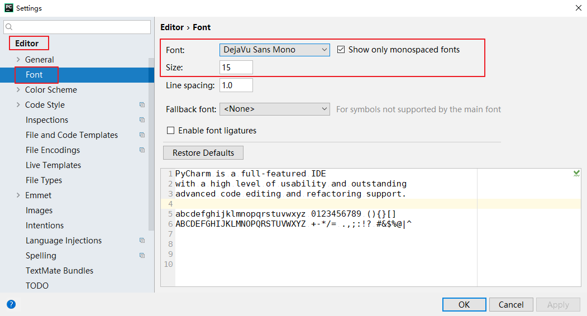
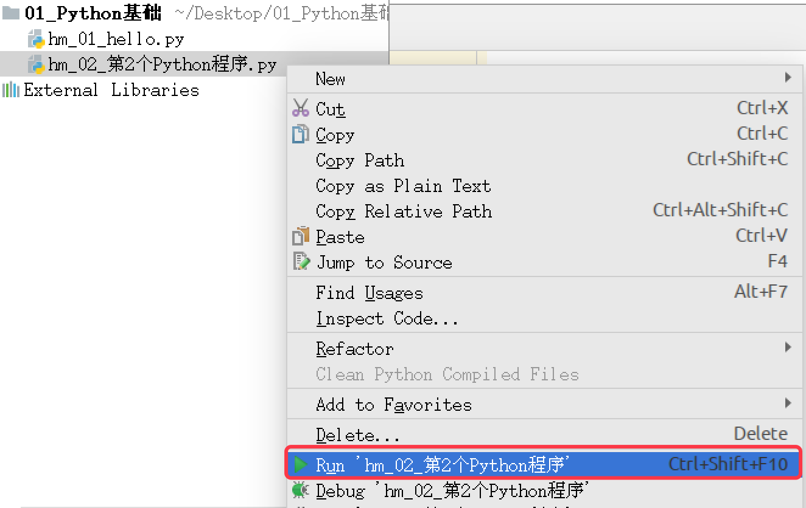

PyCharm 的使用
01. 第一次启动 PyCharm
1.1 欢迎界面
- 通过 欢迎界面 就可以开始开发 Python 项目了

02. 新建/打开一个 Python 项目
2.1 项目简介
- 通常每 一个项目 就具有一个 独立专属的目录，用于保存 所有和项目相关的文件
- 一个项目通常会包含 很多源文件
2.2 新建项目
1) 命名规则
- 工作中项目名多以 大驼峰命名法 进行命名，如 FirstDemo
- 命名文件名时建议只使用 小写字母、数字 和 下划线
文件名不要以数字开始
通过 欢迎界面 或者菜单 File / New Project 可以新建项目

- 文件导航区域 能够 浏览／定位／打开 项目文件
- 文件编辑区域 能够 编辑 当前打开的文件
- 控制台区域 能够：
- 输出程序执行内容
- 跟踪调试代码的执行
2) 演练步骤
- 新建
01_Python基础项目，使用 Python 3.x 解释器 - 在项目下新建
hm_01_hello.pyPython 文件 - 编写
print("Hello Python")代码
2.3 打开 Python 项目
- 直接点击 Open 按钮，然后浏览到之前保存 Python 文件的目录，既可以打开项目
- 打开之后，会在目录下新建一个
.idea的目录，用于保存 项目相关的信息，例如：解释器版本、项目包含的文件等等 - 第一次打开项目，需要耐心等待
PyCharm对项目进行初始设置

2.4 运行和调试
- 右上角的 工具栏 能够 执行(SHIFT + F10) / 调试(SHIFT + F9) 代码

- 通过控制台上方的单步执行按钮(F8)，可以单步执行代码

03. 项目配置
3.1 设置 项目使用的解释器版本
- 打开的目录如果不是由
PyCharm建立的项目目录，有的时候 使用的解释器版本是Python 2.x的，需要单独设置解释器的版本 - 通过 File / Settings... 可以打开设置窗口，如下图所示：

3.2 设置 PyCharm 的字体显示

04. 多文件项目的演练
- 开发 项目 就是开发一个 专门解决一个复杂业务功能的软件
- 通常每 一个项目 就具有一个 独立专属的目录，用于保存 所有和项目相关的文件
- 一个项目通常会包含 很多源文件
目标
- 在项目中添加多个文件，并且设置文件的执行
多文件项目演练
- 在
01_Python基础项目中新建一个hm_02_第2个Python程序.py - 在
hm_02_第2个Python程序.py文件中添加一句print("hello") - 点击右键执行
hm_02_第2个Python程序.py

提示
- 在
PyCharm中，要想让哪一个Python程序能够执行，必须首先通过 鼠标右键的方式执行 一下 - 对于初学者而言，在一个项目中设置多个程序可以执行，是非常方便的，可以方便对不同知识点的练习和测试
- 对于商业项目而言，通常在一个项目中，只有一个 可以直接执行的 Python 源程序